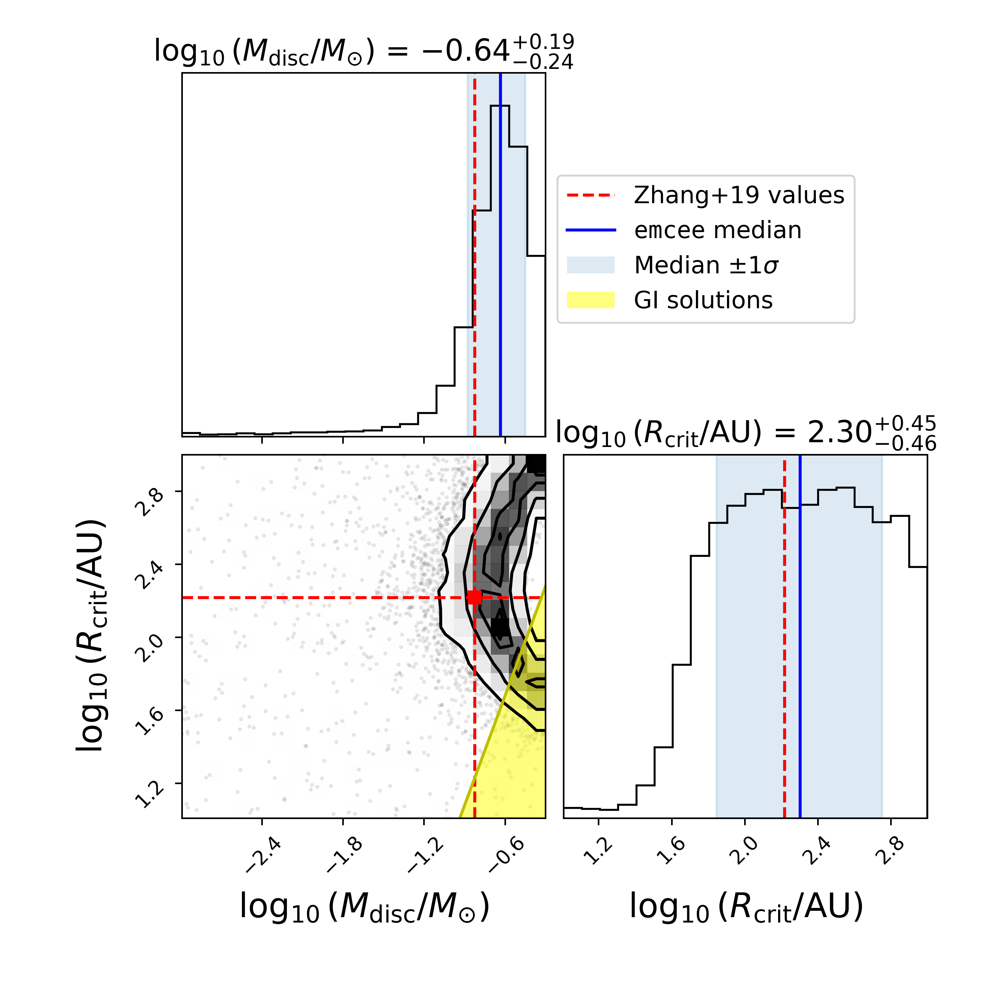

My research focuses on the growth, drift, and sublimation of icy pebbles in protoplanetary discs that surround young stars.
I use 1D radial drift models such as pebble predictor and chemcomp.
I've detailed some of the work I've done so far below, including co-author publications and telescope proposals.
You can find an
ADS list of publications I'm involved in here.
First Author Papers

The CO-Fuelled Time Machine: Tracing Birth Conditions and Terrestrial Planet Formation Outcomes in HD 163296 through Pebble Drift-induced CO Enhancements
Williams, J. & Krijt, S., 2025, MNRAS, 537 pp.831
Drifting pebbles sublimate their CO ice at the CO snowline (at T=20K), releasing vapour into the observable gas-phase. If you know how much CO gas there is, you can infer how much pebble mass you need to have delivered to the CO snowline - this is what Zhang et al. 2020 did did for the Herbig disc HD 163296.
By combining the code pebble predictor and MCMC sampler emcee, we used this pebble mass constraint to constrain the birth mass and radius of the disc when it was first formed; this is what the corner plot to the left shows.
We use our results to estimate the mass flux to the water snowline, where terrestrial planets may be forming, and compare these numbers to planet formation simulations to estimate planet formation outcomes.
Co-Author Papers
Here are some papers on which I am a co-author.
Telescope Proposals
Here are some successful telescope proposals I am involved in.
JWST Cycle 4 Proposals